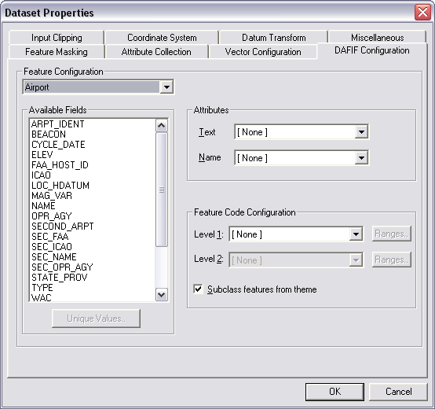

The DAFIF Filter includes the Configuration panel shown below.
The panel allows any two attributes to be used to sub-class a feature, either directly or by defining a set of range breaks using the Ranges Buttons. Note that subclassing of DAFIF data is affected by the input clipping, if the data has been loaded into MapLink Pro Studio. Thus assigning input clipping to a dataset may reduce the attributes that are used to generate the subclasses.
Note that if Layer/ Reload is selected after input clipping, the range of features offered are reduced to the range in the data loaded.
Links: